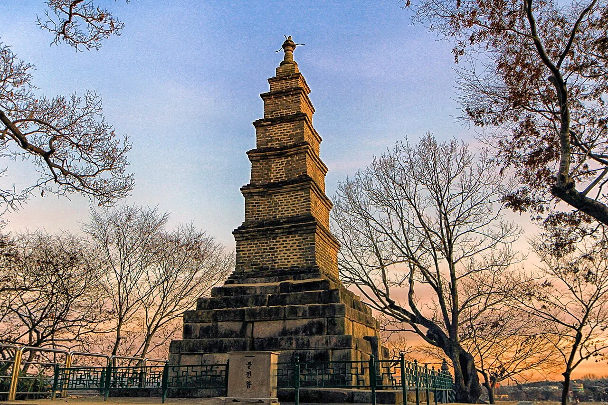
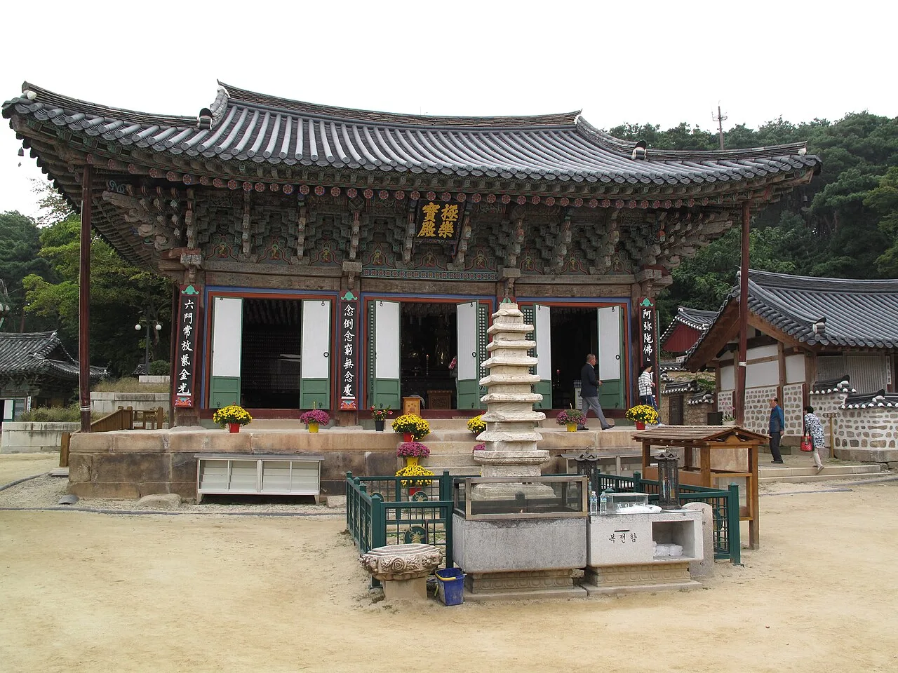
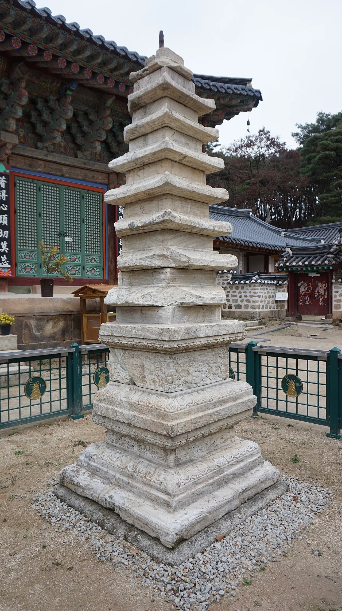
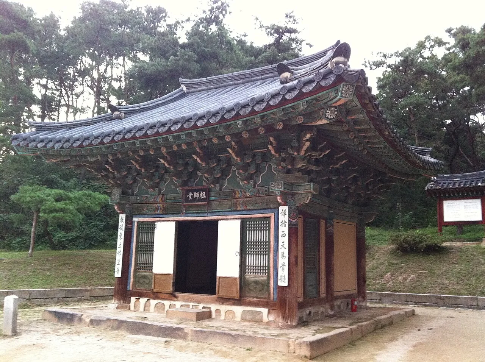
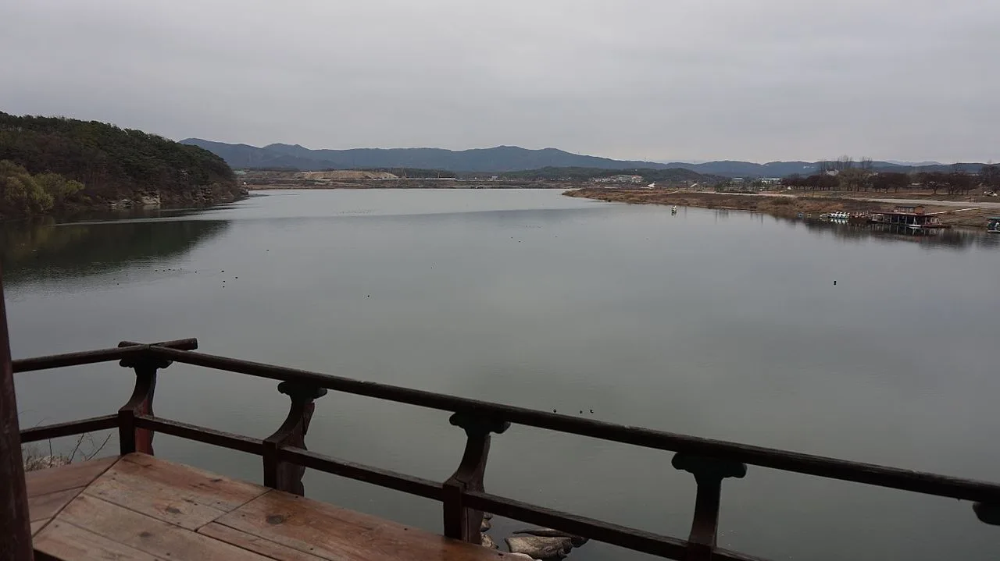
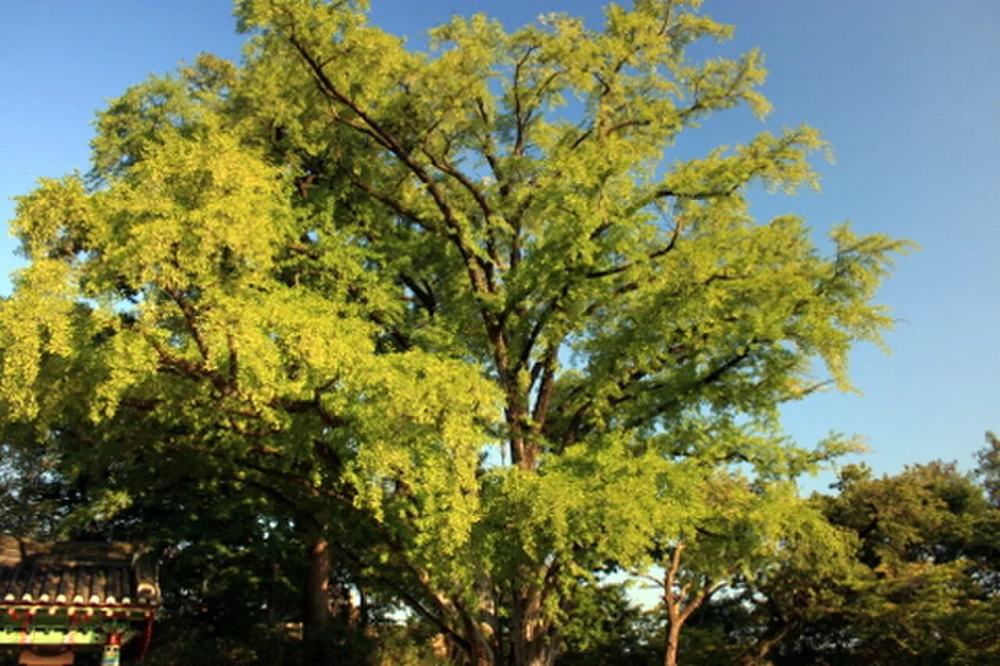

▲ 남한강가 벼랑 위에 선 다층전탑(보물). 이 탑 때문에 신륵사는 예로부터 '벽절'로도 불렸다
경기도 여주시 봉미산 자락, 남한강이 굽어 흐르는 자리에 신륵사(神勒寺)가 있다. 절은 보통 산속 깊은 곳에 자리 잡기 마련인데, 신륵사는 국내에서 보기 드물게 강가 벼랑 위에 세워졌다. 나룻배를 타던 이들이 강 건너에서도 알아봤다는 벽돌 탑 하나가 그 이유를 짐작하게 한다. 신라 때 창건됐다고 전해지는 이 절에는 다층석탑·다층전탑·조사당 등 보물 8점이 모여 있고, 2023년부터는 입장료도 사라졌다. 창건 내력부터 문화재, 강변 풍경과 가을 단풍, 여주보 자전거길 연계, 입장료·주차 정보까지 방문 전 알아두면 좋을 내용을 순서대로 정리했다.
1. 신라 고찰에서 세종 영릉의 원찰로
신륵사는 신라 진평왕 때 원효대사가 창건했다고 전해지는 사찰이다. 정확한 창건 연대를 못 박은 기록은 남아 있지 않지만, 그만큼 오래전부터 이 자리를 지켜온 절이라는 뜻이다. 절 이름의 유래에 대해서는 미륵(彌勒)에서 왔다는 설, 혹은 고려 말 왕사(王師)였던 나옹화상(懶翁和尙)이 신기한 굴레로 용마(龍馬)를 막았다는 설화에서 비롯됐다는 이야기가 함께 전해진다. 나옹화상은 이 절에 머물다 1376년(고려 우왕 2년) 입적한 것으로 알려져 있으며, 한때 200여 칸에 이르는 대사찰이었다고 한다.
신륵사의 위상이 다시 커진 건 조선시대다. 조선 성종 3년(1472년)에는 인근에 조성된 세종대왕의 능인 영릉(英陵)의 원찰(願刹)로 삼으면서 '보은사(報恩寺)'라는 이름으로도 불렸다. 왕릉을 관리하고 명복을 비는 절이라는 위상을 얻으면서, 신륵사는 여주를 대표하는 사찰로 자리를 굳혔다.
2. 보물만 8점 — 극락보전·다층석탑·다층전탑·조사당

▲ 신륵사의 주불전인 극락보전. 조선 숙종 때 지어져 정조 때 중수됐다 ⓒ Wikimedia Commons
신륵사 가람의 중심은 극락보전(極樂寶殿)이다. 앞면 3칸, 옆면 2칸의 크지 않은 규모로 조선 숙종 대에 지어져 정조 대에 중수된 건물로, 양옆에는 요사채인 심검당·적묵당이, 강 쪽으로는 참배객이 쉴 수 있는 강당이 배치돼 있다.

▲ 극락보전 앞마당의 다층석탑(보물). 대리석으로 만들어졌고 원나라 영향을 받은 도교풍 장식이 특징이다 ⓒ Wikimedia Commons
극락보전 앞에 선 다층석탑(多層石塔)은 대리석으로 만들어진 탑으로, 기단을 2단으로 쌓은 뒤 여러 층의 탑신을 올린 모습이다. 고려 말 원나라의 영향을 받아 용무늬·구름무늬 등 도교풍 장식이 많은 것이 특징이며, 1963년 1월 21일 보물 제225호로 지정됐다.
신륵사에서 가장 상징적인 문화재는 강가 벼랑 위에 선 다층전탑(多層塼塔)이다. 벽돌을 층층이 쌓아 올린 고려시대 전탑으로, 현존하는 유일한 고려시대 전탑이라는 점에서도 가치가 크다. 높이 9.4m로 석조 기단 위에 벽돌 탑신과 옥개석을 쌓아 올렸으며, 이 역시 1963년 1월 21일 보물 제226호로 지정됐다. 남한강을 오르내리던 나룻배들에게 등대 구실을 할 만큼 눈에 띄었고, 이 탑 때문에 신륵사는 예로부터 '벽절'이라는 별칭으로도 불렸다.

▲ 지공·나옹·무학대사의 영정을 모신 조사당(보물). 조선 초기 예종 연간에 지어진 것으로 추정된다 ⓒ Wikimedia Commons
극락보전 뒤편에 자리한 조사당(祖師堂)에는 고려 말을 대표하는 승려인 지공(指空)을 가운데 두고 무학(無學)·나옹(懶翁) 대사의 영정을 모셨다. 조선 초기 예종 연간에 지어진 것으로 추정되며, 1963년 1월 21일 보물 제180호로 지정됐다. 조사당 뒤편 언덕에는 나옹의 사리를 모신 종 모양의 부도인 보제존자석종(普濟尊者石鍾, 보물 제228호)과 그 행적을 새긴 보제존자석종비(보물 제229호)가 나란히 서 있다.
국가유산포털에서 다층석탑 상세 정보 확인 가능3. 국내 유일 강변 사찰 — 조포나루와 강월헌

▲ 신륵사 강변 정자에서 바라본 남한강. 산이 아닌 강가에 자리한 사찰이라는 점이 신륵사의 가장 큰 특징이다 ⓒ Wikimedia Commons
신륵사가 다른 사찰과 가장 다른 점은 입지다. 대개 산속에 자리 잡는 절과 달리, 신륵사는 남한강이 내려다보이는 강변에 세워졌다. 절 아래로는 한강의 4대 나루터 중 하나로 꼽히던 조포나루가 있어, 과거 남한강 수운의 요지에서 나루를 오가는 이들의 안녕을 비는 역할도 했던 것으로 전해진다. 다층전탑이 서 있는 강가 벼랑 옆에는 강월헌(江月軒)이라는 작은 정자가 있는데, 나옹화상의 당호(堂號)이기도 한 이 정자는 1972년에 다시 지어진 것으로, 지금도 강 풍경을 감상하는 쉼터 역할을 하고 있다.
4. 600년 은행나무와 가을 단풍

▲ 신륵사 경내에 자리한 수령 약 600년의 은행나무. 가을이면 노란 단풍이 경내를 물들인다 ⓒ Wikimedia Commons
신륵사 경내에는 수령 약 600년으로 추정되는 은행나무 한 그루가 보호수로 지정돼 있다. 남한강가 절 입구 쪽에 서 있는 이 나무는 오랜 세월 강변 풍경을 지켜온 만큼 둘레가 굵고 수관이 넓게 퍼져 있는데, 가을이면 노랗게 물든 은행잎이 다층전탑·강월헌과 함께 어우러지며 신륵사를 대표하는 단풍 명소로 꼽힌다. 산이 아닌 강을 낀 사찰이라 단풍철 인파가 산사보다 한적한 편이라는 것도 특징이다.
5. 여주보 자전거길과 강천섬 연계 코스
신륵사는 국토종주 남한강 자전거길 구간과도 가깝다. 신륵사 앞 강변을 따라 조금만 이동하면 여주보 인증센터가 나오는데, 이곳은 편의점과 화장실 등 편의시설을 갖추고 있어 자전거 라이더들의 중간 기착지로 자주 이용된다. 여주보에서 상류 쪽으로 더 이동하면 차량 출입이 통제돼 도보와 자전거로만 들어갈 수 있는 강천섬 유원지가 나오는데, 청정한 자연 경관이 잘 보존돼 있어 신륵사와 묶어 반나절 남한강 나들이 코스로 즐기기 좋다. 자전거를 타지 않더라도 신륵사 강변 산책로 자체가 남한강 조망을 즐기며 걷기 좋은 구간이라, 도보 여행객에게도 추천할 만하다.
대한민국 구석구석에서 여주 나들이 코스 확인 가능6. 입장료·주차·가는 법
신륵사는 2023년 5월 4일부터 관람료가 없어져 누구나 무료로 경내를 둘러볼 수 있다. 문화재청(現 국가유산청)이 조계종 산하 사찰의 문화재 관람료를 지원하기로 하면서 이뤄진 조치로, 1970년부터 국립공원 입장료와 통합 징수되던 관람료를 둘러싼 오랜 갈등을 해소하는 차원이었다. 주차 역시 무료로 운영되며, 신륵사 관광단지 입구부터 절 입구까지 주차 공간이 마련돼 있다. 자가용을 이용하면 영동고속도로 여주IC에서 10분 안팎 거리이고, 여주시외버스터미널에서도 시내버스로 쉽게 닿을 수 있다.
| 항목 | 내용 |
|---|---|
| 입장료 | 무료(2023년 5월 4일 폐지) |
| 주차 | 무료(관광단지 입구~절 입구 주차장) |
| 주요 문화재 | 다층석탑(보물 225호), 다층전탑(보물 226호), 조사당(보물 180호), 보제존자석종(보물 228호) 등 보물 8점 |
| 위치 | 경기 여주시 신륵사길 73 일원(봉미산 남한강변) |
| 연계 코스 | 여주보 자전거길 인증센터, 강천섬 유원지 |
✅ 여주 신륵사, 가기 전 체크리스트
· 신라 진평왕 때 원효대사 창건 전승, 조선 성종 3년(1472년) 세종 영릉의 원찰로 삼아 '보은사'라고도 불림
· 다층석탑(보물 225호)·다층전탑(보물 226호)·조사당(보물 180호)·보제존자석종(보물 228호) 등 보물 8점 보유
· 벽돌로 쌓은 다층전탑 때문에 예로부터 '벽절'이라는 별칭으로도 불림
· 국내에서 드물게 산이 아닌 남한강변에 자리한 사찰, 강가 정자 강월헌은 1972년 재건
· 경내 수령 약 600년 은행나무는 가을 단풍 명소
· 입장료는 2023년 5월 4일 폐지로 무료, 주차도 무료
· 남한강 자전거길 여주보 인증센터, 강천섬 유원지와 묶어 반나절 나들이 코스로 방문 추천